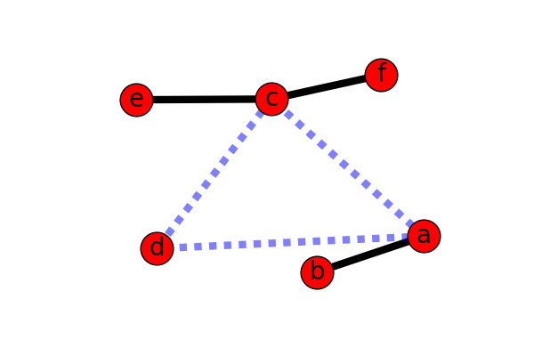

mkdocs 简要说明
markdown是文本文件格式，主要用于生成HTML静态网站，由于其开放性，也能够用于生成多种常见的文档格式。 本部分介绍静态网站生成工具mkdocs。
用markdown编写文档的优势
- 开放性
采用带标记的纯文本存储，本质上来说和HTML等标记语言没有本质的区别，markdown是在吸取了html在文档编辑中过于复杂的问题，最大限度的保留内容上的层级关系， 将文本抽象成一棵树，而将格式渲染留给外围的过程实现，因此，比html语法简单的多，而且编辑过程中不容易受到标识符的影响。
- 便于版本管理和协同开发
由于采用纯本文标识，因此比较容易像程序代码一样适用版本管理工具进行版本管理，版本管理对于文档编写过程是一个十分重要的事项，传统的word文档采用二进制存储， 两次修改之间的变化不容易对比，即便是有修订功能，也很难多个历史版本中找出差距，同时，word等将格式和内容混在一起的做法在历史版本的对比过程中会影响内容变化的对比。 当采用版本管理工具行进管理的时候，同时也可以继承版本管理工具的协同开发能力，可以多个人同时编写一份markdown文档，如果是采用git等分布式版本管理工具， 还很容易的实现并行编写。
- 容易实现自动化
由于markdown的开放性，很容易实现后续处理的自动化，比如自动进行格式转换，嵌套额外的样式等。
- 生态良好
像众多的开放性协议一样，markdown周边的生态也异常丰富，包括版本管理、格式转换、自定义样式、代码托管等。
以上关于markdown的众多优点中，其中任何一个可能都不足以让你选在markdown，但是这些优势加起来，就让markdown变得非常有吸引力。 同时，和markdown相类似的还有reStructuredText等也可以进行关注，另外，word在版本管理、协同编写等生态环境也进行着持续建设，但word毕竟是商业软件！
常用的markdown转换工具
常用的markdown转换工具非常丰富，本文仅介绍典型的集中。
- mkdocs
这个是本文推荐的转换工具，mkdocs采用python实现，其内置的模板包括readthedocs、mkdocs，其中mkdocs是默认形式，另外网上也可以找到很多其它模板，总体来说， mkdocs的风格比较规矩，基本上以文档内容为中心，比较适合用于知识内容管理。mkdocs以菜单形式表示站点的结构，readthedocs采用右边栏的方式表示站点结构， readthedocs更适合文档层级比较多的文档编写，而mkdocs适合一般性的门户网站类的编写。
- jexo
jexo基于node.js实现，比较适合进行个人主页blog的编写，一般围绕时间或个人事件为主线组织内容，可用的模板也非常丰富，另外，这个工具是台湾工程师贡献的， 因此中文文档比较好。由于jexo的特点，用于组织知识感觉没有mkdocs跟为合适。
- pandoc
pandoc是一款命令行的文本转换工具，pandoc的格式不限于markdown格式，可以转换几十种常见的文档格式，比较适合后台批量的文档处理。
- ms word
ms word中也可以安装插件（如writage），支持markdown编写与转换
- gitbook
gitbook专门为写书而设计，实际上是一款markdown编辑器，但是提供了所见即所得的编辑方式，同时和git集成，可以将协作的结果发布托管网站。
mkdocs使用
- 安装mkdocs
1.安装python
python环境安装请查阅相关文档。
2.使用pip安装mkdocs
pip install mkdocs
pip安装需要连接网络，如果无法直接连接网络请自行搭建内部pip站点或者解决依赖问题。
-
创建站点
mkdocs new [dir-name]- 新建一个站点工程.mkdocs serve- 启动http服务，在工程项目目录下执行，不同于hexo等工具，这个命令没有简化形式，必须完全输入.mkdocs build- 显式执行站点的构建，将markdown文档转换成html站点，如果上一步http服务已经启动，每次保存将自动构建.mkdocs help- 帮助信息.
markdown 简明语法
- 大纲
# 这是一级大纲
## 这是二级大纲
- 列表
* 这是条目1
* 这是条目2
- 这是二级条目1
- 这是二级条目2
二级条目采用空格缩进
- 表格
语法如下：
| 左对齐 | 居中对齐 | 右对齐 |
| :------------------|--- :-:------|---------:|
| Harry Potter | Gryffindor| 90 |
| Hermione Granger | Gryffindor| 100 |
| Draco Malfoy | Slytherin | 90 |
效果如下：
| 左对齐 | 居中对齐 | 右对齐 |
|---|---|---|
| Harry Potter | Gryffindor | 90 |
| Hermione Granger | Gryffindor | 100 |
| Draco Malfoy | Slytherin | 90 |
- 链接
注意链接的](即方括号和圆括号之间不能包含空格
1- 站内链接
[python](IT/lang/python)
例如 python
2- 外部链接
[mkdocs.org](http://mkdocs.org)
3- 页面内链接
文档内链接需要在文档特定位置先设置锚点，点击链接时锚点滚动到显示页面第一行，为了保持干净，锚点可以只提供编号，不设置名称。
<h2 id="about_links"></h2>
* 链接
* `mkdocs new [dir-name]` - Create a new project.
* `mkdocs serve` - Start the live-reloading docs server.
引用方式如下
[页面内链接到标题 链接](#about_links)
4- 图片引用

效果如下：

- 字体
*斜体*
**粗体**
***斜+粗***
- 摘要
>
>>
>>>
- 代码片段
```markdown
```
- 常用技巧
- 格式
- 很多格式和空行、空格、缩进有关系，如果缺少空格、空行和缩进就无法正常标识出想要的格式。
- 文档更新
- 只有mkdocs.yml会导致页面更新错误，md文档编写不会出现无法生成的问题。
- 站点布局
- mkdocs 模板采用菜单方式表示站点结构，如果层级太多不利于适用，可以更换模板或者减少层级。
- 只有配置在mkdocs.yml中的页面才会被编译，如果mkdocs默认模板菜单层级过深，可以适当整合文档内容，但所有文档都需要在配置文件中配置。
- 当单个文件过大时，也会影响页面加载的时间，降低用户体验，因此需要进行权衡。
- 配置
- 配置文件为mkdocs.yml，位于项目根目录
- 配置文件为yml格式，是缩进敏感的类型，需要注意不要在文档中存在制表符（一般IDE会自动将制表符转化为4空格）
- 格式
和git结合
由于markdown是纯文本，所有很容易纳入版本管理工具进行管理，目前互联网界分布式版本管理工具git大行其道，生态成熟丰富，是版本管理的不二之选。
版本管理
仅markdown和相应的配置文件mkdocs.yml纳入版本管理即可，生成的site站点文件以及其它无关文件可以适用.ignore文件略去：
# .ignore
site/
**/*~
协同编著
利用git的分布式版本管理能力进行协同编著，具体可以参与互联网上git的相关用法。